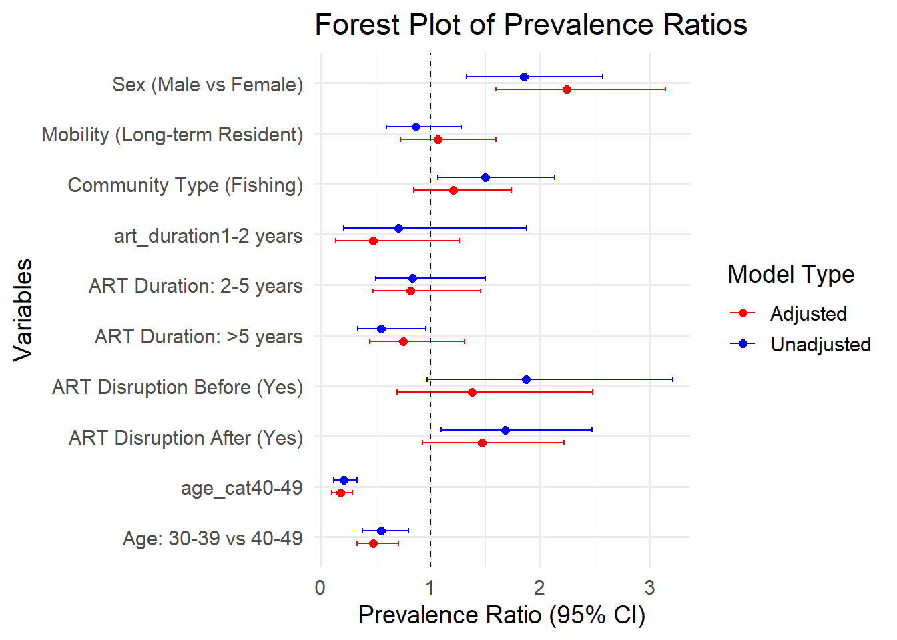
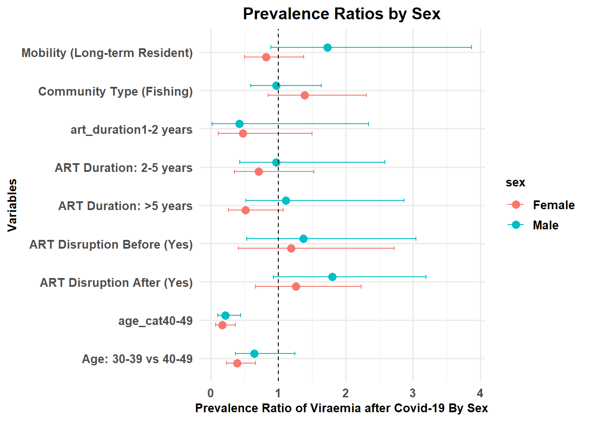
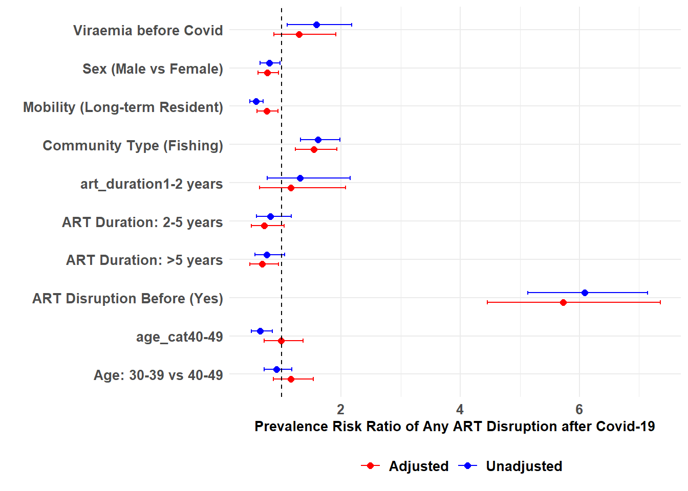
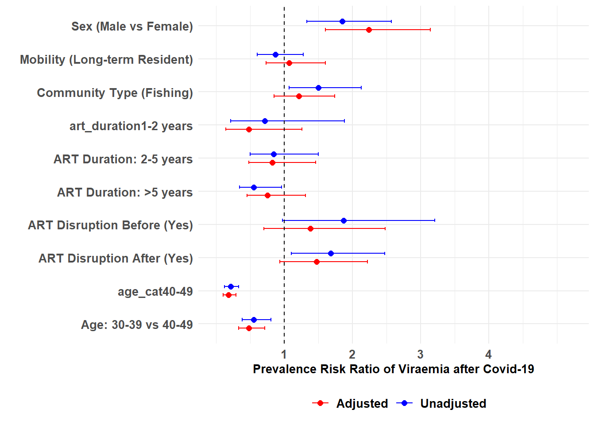
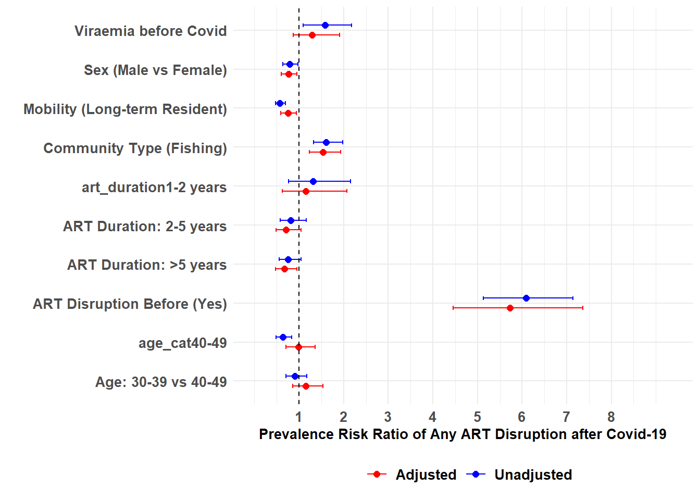
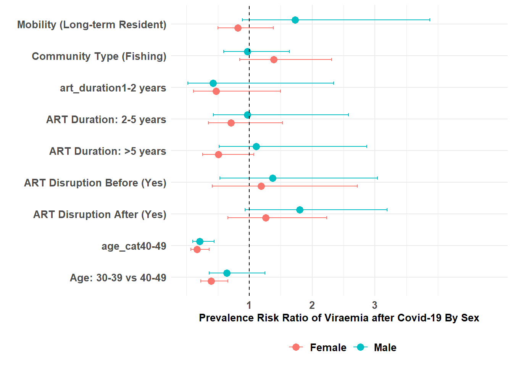
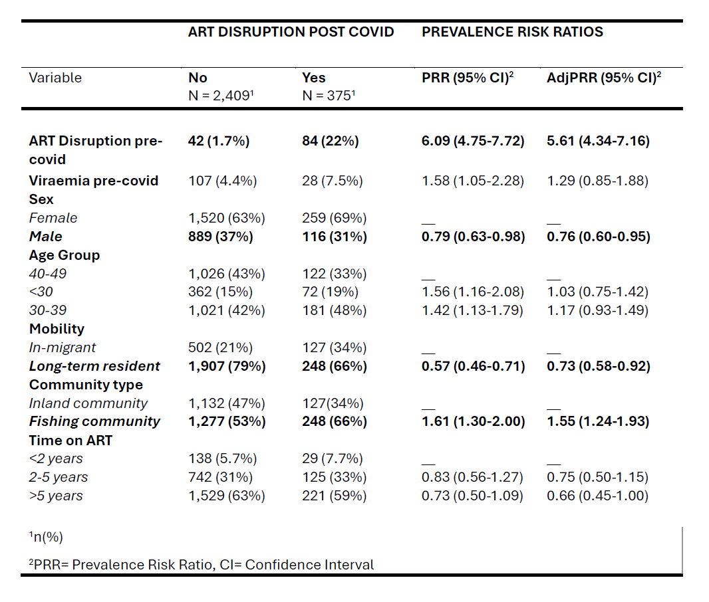
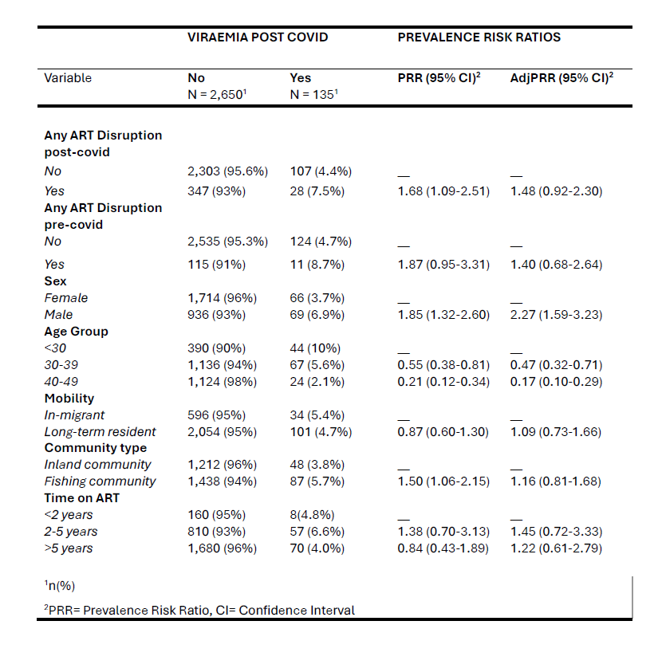
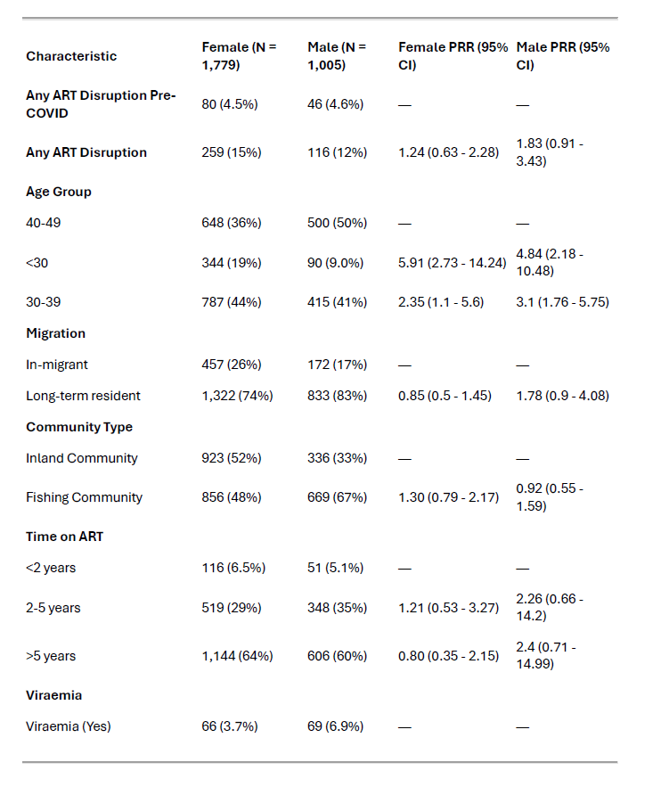

library(MASS)
library(tidyverse)
library(broom)
library(finalfit)
library(conflicted)
library(gtsummary)
library(gt)
library(flextable)
conflict_prefer("select", "dplyr")
conflict_prefer("filter", "dplyr")RAKAI REGRESSION UPDATES
rakai = read_csv("rakai_updated.csv")df_rakai_reg <- rakai %>%
select(ageyrs,sex,mobility,arthoac,artrunac,artstrac,
artyrs,comm_num,artrunbc,artstrbc,hivac,hivbc,copies,new_copies,everything()) %>%
filter(copies != "INV.IC ",!is.na(copies),!is.na(new_copies)) %>%
mutate(
copies = str_remove_all(copies, "<\\s*"),
copies = if_else(copies == "BD", "0", copies),
copies = as.numeric(copies),
new_copies = str_remove_all(new_copies, "<\\s*"),
new_copies = if_else(new_copies == "BD", "0", new_copies),
new_copies = as.numeric(new_copies)
) %>%
mutate(viral_load_b4 = if_else(copies < 200, "Viral Load Sppression","Viraemia") %>%
ff_label("HIV RNA viral load, in copies/ml"),
viral_load_after = if_else(new_copies < 200,"Viral Load Sppression","Viraemia") %>%
ff_label("HIV RNA viral load, in copies/ml")) %>%
mutate(
suppbc = if_else(viral_load_b4 == "Viral Load Suppression", 1, 0),
suppac = if_else(viral_load_after == "Viral Load Suppression", 1, 0)
) %>%
mutate(ageyrs = ageyrs %>% ff_label("Age (years)"),
sex = if_else(sex == "F","Female","Male") %>%
as_factor() %>%
fct_relevel("Female") %>%
ff_label("Sex"),
mobility = case_when(
mobility %in% c(3,8,10) ~ "In-migrant",
.default = "Long-term resident") %>%
fct_relevel("In-migrant") %>%
ff_label("Migration"),
community_type = case_when(
comm_num %in% c(38,770,771,774) ~ "Fishing community",
.default = "Inland Community") %>%
fct_relevel("Inland Community") %>%
ff_label("Community type"),
fishing_comm = if_else(community_type == "Fishing Community",1,0) %>%
ff_label("Lake Victoria Fishing Community"),
primary_occupation = case_when(
occup1 %in% c(1,2,5) ~ "Agriculture/Homebrewing",
occup1 %in% c(10,11) ~ "Trading or shopkeeping",
occup1 %in% c(12,18) ~ "Bar work or waitressing",
occup1 %in% c(2,3,4) ~ "House work",
occup1 == 7 ~ "Fishing-related occupation",
.default = "Other") %>%
fct_relevel("Agriculture/Homebrewing","Trading or shopkeeping") %>%
ff_label("Primary Occupation"),
age_cat = case_when(
ageyrs < 30 ~ "<30",
ageyrs >= 30 & ageyrs <= 39 ~ "30-39",
ageyrs >=40 & ageyrs <= 49 ~ "40-49") %>%
fct_relevel("<30") %>%
ff_label("Age group"),
current_marital_status = case_when(
currmarr == 1 ~ "Currently married",
currmarr == 2 ~ "Previously married",
currmarr == 8 ~ "Never married"
) %>%
fct_relevel("Never married","Currently married") %>%
ff_label("Current marital status"),
art_duration = case_when(
artyrs >= 1 & artyrs < 2 ~ "1-2 years",
artyrs > 2 & artyrs <= 5 ~ "2-5 years",
artyrs > 5 ~ ">5 years",
.default = "<1 year"
) %>%
fct_relevel("<1 year","1-2 years","2-5 years") %>%
ff_label("Time on ART"),
education_level = case_when(
educyrs == 8 ~ "No formal education",
educyrs %in% c(1,2) ~ "Primary",
educyrs %in% c(3,4) ~ "Secondary",
educyrs %in% c(5,6,7,10,11) ~ "Technical/University"
) %>%
fct_relevel("No formal education") %>%
ff_label("Educational attainment"),
religion = case_when(
religion %in% c(1,6) ~ "Other or none",
religion %in% c(2,3,4) ~ "Catholic/Christian",
religion == 5 ~ "Muslim"
) %>%
ff_label("Religion"),
hivac = if_else(hivac == 1, 1, 0) %>%
ff_label("Missed scheduled Visit"),
hivbc = if_else(hivbc == 1, 1, 0) %>%
ff_label("Missed Scheduled Visit"),
artrunac = if_else(artrunac == 1, 1, 0) %>%
ff_label("Run out of ARTl"),
artrunbc = if_else(artrunbc == 1, 1, 0) %>%
ff_label("Run out of ART"),
artstrac = if_else(artstrac == 1, 1, 0) %>%
ff_label("Reduced ART Intake"),
artstrbc = if_else(artstrbc == 1, 1, 0) %>%
ff_label("Reduced ART Intake"))df_viraemia <- df_rakai_reg %>%
select(sex,age_cat,mobility,community_type,art_duration,
hivbc,artrunbc,artstrbc,hivac,artrunac,artstrac,viral_load_b4,
viral_load_after,suppbc,suppac) %>%
mutate(any_disruption_b4 = if_else(rowSums(across(hivbc:artrunbc),na.rm = TRUE) > 0,1,0) %>%
ff_label("Any ART Disruption"),
any_disruption_after = if_else(rowSums(across(hivac:artstrac),na.rm = TRUE) > 0,1,0)%>%
ff_label("Any ART Disruption")) df_viraemia <- df_viraemia %>%
mutate(
viraemia_after_covid = if_else(viral_load_after == "Viraemia","Yes","No") %>%
fct_relevel("No") %>%
ff_label("Viraemia"),
viraemia_after_dum = if_else(viral_load_after == "Viraemia",1,0) %>%
ff_label("Viraemia"),
viraemia_b4_covid = if_else(viral_load_b4 == "Viraemia","Yes","No") %>%
fct_relevel("No") %>%
ff_label("Viraemia"),
viraemia_b4_dum = if_else(viral_load_b4 == "Viraemia",1,0) %>%
ff_label("Viraemia"),
art_disruption_b4 = if_else(any_disruption_b4 == 1,"Yes","No") %>%
fct_relevel("No") %>%
ff_label("Any ART Disruption pre-covid"),
art_disruption_after = if_else(any_disruption_after == 1,"Yes","No") %>%
fct_relevel("No") %>%
ff_label("Any ART Disruption post-covid"),
)
# saveRDS(df_viraemia, file = "df_viraemia.rds")df_table_1 <- df_rakai_reg %>%
select(
ageyrs,age_cat,sex,current_marital_status,education_level,primary_occupation,
mobility,community_type,art_duration
)
df_table_1 %>%
tbl_summary(
by = sex,
statistic = list(
all_categorical() ~ "{n} ({p}%)",
all_continuous() ~ "{median} ({IQR})"
),
digits = list(
all_categorical() ~ 0,
all_continuous() ~ 0
)
) %>%
add_overall() %>%
bold_labels() %>%
italicize_levels() %>%
modify_spanning_header(
all_stat_cols() ~ "**Sex**"
)| Characteristic |
Sex
|
||
|---|---|---|---|
| Overall N = 2,7851 |
Female N = 1,7801 |
Male N = 1,0051 |
|
| Age (years) | 38 (11) | 36 (11) | 39 (9) |
| Age group | |||
| <30 | 434 (16%) | 344 (19%) | 90 (9%) |
| 30-39 | 1,203 (43%) | 788 (44%) | 415 (41%) |
| 40-49 | 1,148 (41%) | 648 (36%) | 500 (50%) |
| Current marital status | |||
| Never married | 138 (5%) | 93 (5%) | 45 (4%) |
| Currently married | 1,692 (61%) | 1,015 (57%) | 677 (67%) |
| Previously married | 955 (34%) | 672 (38%) | 283 (28%) |
| Educational attainment | |||
| No formal education | 255 (9%) | 165 (9%) | 90 (9%) |
| Primary | 1,902 (68%) | 1,170 (66%) | 732 (73%) |
| Secondary | 396 (14%) | 278 (16%) | 118 (12%) |
| Technical/University | 232 (8%) | 167 (9%) | 65 (6%) |
| Primary Occupation | |||
| Agriculture/Homebrewing | 698 (25%) | 520 (29%) | 178 (18%) |
| Trading or shopkeeping | 520 (19%) | 410 (23%) | 110 (11%) |
| Bar work or waitressing | 278 (10%) | 274 (15%) | 4 (0%) |
| Fishing-related occupation | 501 (18%) | 3 (0%) | 498 (50%) |
| House work | 282 (10%) | 278 (16%) | 4 (0%) |
| Other | 506 (18%) | 295 (17%) | 211 (21%) |
| Migration | |||
| In-migrant | 630 (23%) | 458 (26%) | 172 (17%) |
| Long-term resident | 2,155 (77%) | 1,322 (74%) | 833 (83%) |
| Community type | |||
| Inland Community | 1,260 (45%) | 924 (52%) | 336 (33%) |
| Fishing community | 1,525 (55%) | 856 (48%) | 669 (67%) |
| Time on ART | |||
| <1 year | 220 (8%) | 150 (8%) | 70 (7%) |
| 1-2 years | 78 (3%) | 50 (3%) | 28 (3%) |
| 2-5 years | 737 (26%) | 436 (24%) | 301 (30%) |
| >5 years | 1,750 (63%) | 1,144 (64%) | 606 (60%) |
| 1 Median (IQR); n (%) | |||
# saveRDS(df_table_1, file = "df_table_1.rds")Combined Forest Plot of Univariable and Multivariable Regressions with Viraemia after Covid as Outcome
df_viraemia <- read_rds("df_viraemia.rds") %>%
drop_na()
# missing_glimpse(df_viraemia)
# ff_glimpse(df_viraemia)Multivariate log binomial regression with viraemia after covid as outcome and summarise the prevalence ratios and confidence intervals into a table.
# Fit the log-binomial model
model_viraemia_logbin <- df_viraemia %>%
glm(viraemia_after_dum ~ any_disruption_after + any_disruption_b4 + sex +
age_cat + mobility + community_type + art_duration,
family = binomial(link = "log"), data = .)
# Extract results and format
viraemia_multivariate_df <- model_viraemia_logbin %>%
tidy(exponentiate = TRUE, conf.int = TRUE) %>%
mutate(model = "Adjusted") %>%
select(term, model, estimate, conf.low, conf.high) %>%
mutate(across(where(is.numeric), \(x) round(x, 2))) %>%
dplyr::filter(term != "(Intercept)")
# Print results
viraemia_multivariate_df| term | model | estimate | conf.low | conf.high |
|---|---|---|---|---|
| any_disruption_after | Adjusted | 1.47 | 0.93 | 2.22 |
| any_disruption_b4 | Adjusted | 1.38 | 0.70 | 2.48 |
| sexMale | Adjusted | 2.24 | 1.60 | 3.14 |
| age_cat30-39 | Adjusted | 0.48 | 0.33 | 0.71 |
| age_cat40-49 | Adjusted | 0.18 | 0.10 | 0.29 |
| mobilityLong-term resident | Adjusted | 1.07 | 0.73 | 1.60 |
| community_typeFishing community | Adjusted | 1.21 | 0.85 | 1.74 |
| art_duration1-2 years | Adjusted | 0.48 | 0.14 | 1.26 |
| art_duration2-5 years | Adjusted | 0.82 | 0.48 | 1.46 |
| art_duration>5 years | Adjusted | 0.75 | 0.45 | 1.31 |
Univariate log binomial regression with viraemia after covid as outcome and summarise the prevalence ratios and confidence intervals into a table.
# Define explanatory and dependent variables
explanatory_vars <- c("any_disruption_after", "any_disruption_b4", "sex",
"age_cat", "mobility", "community_type", "art_duration")
dependent_var <- "viraemia_after_dum"
# Fit log-binomial models for each explanatory variable
viraemia_univariate_df <- explanatory_vars %>%
str_c(dependent_var, " ~ ", .) %>%
map(
.f = ~glm(
formula = as.formula(.x),
family = binomial(link = "log"),
data = df_viraemia
)
) %>%
map(
.f = ~tidy(.x, exponentiate = TRUE, conf.int = TRUE)
) %>%
bind_rows() %>%
mutate(across(where(is.numeric), \(x) round(x, 2)),
model = "Unadjusted") %>%
filter(term != "(Intercept)") %>%
select(term, model, estimate, conf.low, conf.high)
# Print results
viraemia_univariate_df| term | model | estimate | conf.low | conf.high |
|---|---|---|---|---|
| any_disruption_after | Unadjusted | 1.68 | 1.10 | 2.47 |
| any_disruption_b4 | Unadjusted | 1.87 | 0.97 | 3.21 |
| sexMale | Unadjusted | 1.85 | 1.33 | 2.57 |
| age_cat30-39 | Unadjusted | 0.55 | 0.38 | 0.80 |
| age_cat40-49 | Unadjusted | 0.21 | 0.12 | 0.33 |
| mobilityLong-term resident | Unadjusted | 0.87 | 0.60 | 1.28 |
| community_typeFishing community | Unadjusted | 1.50 | 1.07 | 2.13 |
| art_duration1-2 years | Unadjusted | 0.71 | 0.21 | 1.88 |
| art_duration2-5 years | Unadjusted | 0.84 | 0.50 | 1.50 |
| art_duration>5 years | Unadjusted | 0.55 | 0.34 | 0.96 |
# combine univariate and multivariate model dataframes into one dataframe
viraemia_forest_df <- bind_rows(viraemia_univariate_df,viraemia_multivariate_df)%>% mutate(term = case_when(
term == "any_disruption_after" ~ "ART Disruption After (Yes)",
term == "any_disruption_b4" ~ "ART Disruption Before (Yes)",
term == "sexMale" ~ "Sex (Male vs Female)",
term == "age_cat<30" ~ "Age: <30 vs 40-49",
term == "age_cat30-39" ~ "Age: 30-39 vs 40-49",
term == "mobilityLong-term resident" ~ "Mobility (Long-term Resident)",
term == "community_typeFishing community" ~ "Community Type (Fishing)",
term == "art_duration2-5 years" ~ "ART Duration: 2-5 years",
term == "art_duration>5 years" ~ "ART Duration: >5 years",
term == "viraemia_b4_dum" ~ "Viraemia before Covid",
TRUE ~ term
)) %>%
arrange(desc(estimate))
viraemia_forest_df| term | model | estimate | conf.low | conf.high |
|---|---|---|---|---|
| Sex (Male vs Female) | Adjusted | 2.24 | 1.60 | 3.14 |
| ART Disruption Before (Yes) | Unadjusted | 1.87 | 0.97 | 3.21 |
| Sex (Male vs Female) | Unadjusted | 1.85 | 1.33 | 2.57 |
| ART Disruption After (Yes) | Unadjusted | 1.68 | 1.10 | 2.47 |
| Community Type (Fishing) | Unadjusted | 1.50 | 1.07 | 2.13 |
| ART Disruption After (Yes) | Adjusted | 1.47 | 0.93 | 2.22 |
| ART Disruption Before (Yes) | Adjusted | 1.38 | 0.70 | 2.48 |
| Community Type (Fishing) | Adjusted | 1.21 | 0.85 | 1.74 |
| Mobility (Long-term Resident) | Adjusted | 1.07 | 0.73 | 1.60 |
| Mobility (Long-term Resident) | Unadjusted | 0.87 | 0.60 | 1.28 |
| ART Duration: 2-5 years | Unadjusted | 0.84 | 0.50 | 1.50 |
| ART Duration: 2-5 years | Adjusted | 0.82 | 0.48 | 1.46 |
| ART Duration: >5 years | Adjusted | 0.75 | 0.45 | 1.31 |
| art_duration1-2 years | Unadjusted | 0.71 | 0.21 | 1.88 |
| Age: 30-39 vs 40-49 | Unadjusted | 0.55 | 0.38 | 0.80 |
| ART Duration: >5 years | Unadjusted | 0.55 | 0.34 | 0.96 |
| Age: 30-39 vs 40-49 | Adjusted | 0.48 | 0.33 | 0.71 |
| art_duration1-2 years | Adjusted | 0.48 | 0.14 | 1.26 |
| age_cat40-49 | Unadjusted | 0.21 | 0.12 | 0.33 |
| age_cat40-49 | Adjusted | 0.18 | 0.10 | 0.29 |
ggplot(viraemia_forest_df, aes(x = term, y = estimate, color = model)) +
geom_point(position = position_dodge(width = 0.5), size = 2) +
geom_errorbar(aes(ymin = conf.low, ymax = conf.high),
position = position_dodge(width = 0.5), width = 0.2) +
geom_hline(yintercept = 1, linetype = "dashed", color = "black") +
coord_flip() + # Flip coordinates for better readability
scale_color_manual(values = c("Unadjusted" = "blue", "Adjusted" = "red")) +
labs(title = "Forest Plot of Prevalence Ratios",
x = "Variables",
y = "Prevalence Ratio (95% CI)",
color = "Model Type") +
theme_minimal(base_size = 14) 
Stratification by Sex
# Fit log-binomial models stratified by sex
model_viraemia_sex <- df_viraemia %>%
group_by(sex) %>%
nest() %>%
mutate(
model = map(data, ~ glm(viraemia_after_dum ~ any_disruption_after +
any_disruption_b4 + age_cat + mobility +
community_type + art_duration,
family = binomial(link = "log"),
data = .x)),
results = map(model, ~ tidy(.x, exponentiate = TRUE, conf.int = TRUE))
) %>%
unnest(cols = results) %>%
select(sex, term, estimate, conf.low, conf.high) %>%
mutate(across(where(is.numeric), \(x) round(x, 2))) %>%
dplyr::filter(term != "(Intercept)")
# Print results
model_viraemia_sex| sex | term | estimate | conf.low | conf.high |
|---|---|---|---|---|
| Female | any_disruption_after | 1.26 | 0.66 | 2.23 |
| Female | any_disruption_b4 | 1.19 | 0.41 | 2.72 |
| Female | age_cat30-39 | 0.39 | 0.23 | 0.66 |
| Female | age_cat40-49 | 0.17 | 0.07 | 0.36 |
| Female | mobilityLong-term resident | 0.82 | 0.50 | 1.38 |
| Female | community_typeFishing community | 1.39 | 0.85 | 2.31 |
| Female | art_duration1-2 years | 0.47 | 0.11 | 1.50 |
| Female | art_duration2-5 years | 0.71 | 0.35 | 1.53 |
| Female | art_duration>5 years | 0.51 | 0.26 | 1.07 |
| Male | any_disruption_after | 1.80 | 0.93 | 3.19 |
| Male | any_disruption_b4 | 1.37 | 0.53 | 3.04 |
| Male | age_cat30-39 | 0.64 | 0.36 | 1.25 |
| Male | age_cat40-49 | 0.21 | 0.10 | 0.44 |
| Male | mobilityLong-term resident | 1.73 | 0.89 | 3.87 |
| Male | community_typeFishing community | 0.97 | 0.59 | 1.64 |
| Male | art_duration1-2 years | 0.42 | 0.02 | 2.34 |
| Male | art_duration2-5 years | 0.97 | 0.43 | 2.58 |
| Male | art_duration>5 years | 1.11 | 0.52 | 2.87 |
sex_forest_df <- model_viraemia_sex %>%
mutate(term = case_when(
term == "any_disruption_after" ~ "ART Disruption After (Yes)",
term == "any_disruption_b4" ~ "ART Disruption Before (Yes)",
term == "sexMale" ~ "Sex (Male vs Female)",
term == "age_cat<30" ~ "Age: <30 vs 40-49",
term == "age_cat30-39" ~ "Age: 30-39 vs 40-49",
term == "mobilityLong-term resident" ~ "Mobility (Long-term Resident)",
term == "community_typeFishing community" ~ "Community Type (Fishing)",
term == "art_duration2-5 years" ~ "ART Duration: 2-5 years",
term == "art_duration>5 years" ~ "ART Duration: >5 years",
term == "viraemia_b4_dum" ~ "Viraemia before Covid",
TRUE ~ term
)) %>%
arrange(desc(estimate))
sex_forest_df| sex | term | estimate | conf.low | conf.high |
|---|---|---|---|---|
| Male | ART Disruption After (Yes) | 1.80 | 0.93 | 3.19 |
| Male | Mobility (Long-term Resident) | 1.73 | 0.89 | 3.87 |
| Female | Community Type (Fishing) | 1.39 | 0.85 | 2.31 |
| Male | ART Disruption Before (Yes) | 1.37 | 0.53 | 3.04 |
| Female | ART Disruption After (Yes) | 1.26 | 0.66 | 2.23 |
| Female | ART Disruption Before (Yes) | 1.19 | 0.41 | 2.72 |
| Male | ART Duration: >5 years | 1.11 | 0.52 | 2.87 |
| Male | Community Type (Fishing) | 0.97 | 0.59 | 1.64 |
| Male | ART Duration: 2-5 years | 0.97 | 0.43 | 2.58 |
| Female | Mobility (Long-term Resident) | 0.82 | 0.50 | 1.38 |
| Female | ART Duration: 2-5 years | 0.71 | 0.35 | 1.53 |
| Male | Age: 30-39 vs 40-49 | 0.64 | 0.36 | 1.25 |
| Female | ART Duration: >5 years | 0.51 | 0.26 | 1.07 |
| Female | art_duration1-2 years | 0.47 | 0.11 | 1.50 |
| Male | art_duration1-2 years | 0.42 | 0.02 | 2.34 |
| Female | Age: 30-39 vs 40-49 | 0.39 | 0.23 | 0.66 |
| Male | age_cat40-49 | 0.21 | 0.10 | 0.44 |
| Female | age_cat40-49 | 0.17 | 0.07 | 0.36 |
ggplot(sex_forest_df, aes(x = term, y = estimate, color = sex)) +
geom_point(position = position_dodge(width = 0.5), size = 3) +
geom_errorbar(aes(ymin = conf.low, ymax = conf.high),
position = position_dodge(width = 0.5), width = 0.2) +
geom_hline(yintercept = 1, linetype = "dashed", color = "black") +
coord_flip() +
labs(
title = "Prevalence Ratios by Sex",
x = "Variables",
y = "Prevalence Ratio of Viraemia after Covid-19 By Sex"
) +
theme_minimal(base_size = 12) +
theme(
plot.title = element_text(face = "bold", size = 14, hjust = 0.5),
axis.text = element_text(face = "bold", size = 10),
axis.title = element_text(face = "bold", size = 10),
legend.text = element_text(face = "bold", size = 10),
legend.title = element_text(face = "bold", size = 10)
)
Univariable and Multivariable Regressions with ART Disruption as Outcome
Multivariate log binomial regression with any ART disruption after covid as outcome and summarise the prevalence ratios and confidence intervals into a table.
Due to failure to converge,Poisson regression with robust standard errors was fitted.
library(sandwich)
library(lmtest)
# Fit Poisson model with robust standard errors
model_disruption_multivariate <- glm(any_disruption_after ~ any_disruption_b4 + sex +age_cat + mobility + community_type + art_duration + viraemia_b4_dum,
family = poisson(link = "log"), data = df_viraemia)
# Adjust for robust standard errors
model_disruption_multivariate_robust <- coeftest(model_disruption_multivariate,
vcov = vcovHC(model_disruption_multivariate, type = "HC0"))
# Correct calculation of confidence intervals
conf_int <- confint.default(model_disruption_multivariate) # Compute log-scale CIs
conf_int <- exp(conf_int) # Exponentiate to get PRR CIs
# Convert to tibble and merge correct confidence intervals
disruption_multivariate_df <- tidy(model_disruption_multivariate_robust) %>%
mutate(
estimate = exp(estimate) # Exponentiate coefficients
) %>%
left_join(
tibble(term = rownames(conf_int), conf.low = conf_int[,1], conf.high = conf_int[,2]),
by = "term"
) %>%
mutate(model = "Adjusted") %>%
select(term, model, estimate, conf.low, conf.high) %>%
mutate(across(where(is.numeric), \(x) round(x, 2))) %>%
dplyr::filter(term != "(Intercept)")
# Print results
disruption_multivariate_df| term | model | estimate | conf.low | conf.high |
|---|---|---|---|---|
| any_disruption_b4 | Adjusted | 5.73 | 4.45 | 7.36 |
| sexMale | Adjusted | 0.76 | 0.60 | 0.95 |
| age_cat30-39 | Adjusted | 1.15 | 0.86 | 1.53 |
| age_cat40-49 | Adjusted | 0.99 | 0.71 | 1.36 |
| mobilityLong-term resident | Adjusted | 0.75 | 0.59 | 0.94 |
| community_typeFishing community | Adjusted | 1.54 | 1.23 | 1.93 |
| art_duration1-2 years | Adjusted | 1.15 | 0.63 | 2.07 |
| art_duration2-5 years | Adjusted | 0.71 | 0.49 | 1.04 |
| art_duration>5 years | Adjusted | 0.67 | 0.47 | 0.95 |
| viraemia_b4_dum | Adjusted | 1.29 | 0.87 | 1.91 |
Univariate negative binomial regression with any ART disruption after covid as outcome and summarise the prevalence ratios and confidence intervals into a table.
explanatory_vars <- c("any_disruption_b4","sex","age_cat","mobility","community_type","art_duration","viraemia_b4_dum")
dependent_var <- "art_disruption_after"# Fit log-binomial models for each explanatory variable
disruption_univariate_df <- explanatory_vars %>%
str_c("any_disruption_after ~ ", .) %>%
map(
.f = ~glm(
formula = as.formula(.x),
family = binomial(link = "log"),
data = df_viraemia
)
) %>%
map(
.f = ~tidy(.x, exponentiate = TRUE, conf.int = TRUE)
) %>%
bind_rows() %>%
mutate(across(where(is.numeric), \(x) round(x, 2)),
model = "Unadjusted") %>%
filter(term != "(Intercept)") %>%
select(term, model, estimate, conf.low, conf.high)
# Print results
disruption_univariate_df| term | model | estimate | conf.low | conf.high |
|---|---|---|---|---|
| any_disruption_b4 | Unadjusted | 6.09 | 5.13 | 7.14 |
| sexMale | Unadjusted | 0.79 | 0.64 | 0.97 |
| age_cat30-39 | Unadjusted | 0.91 | 0.71 | 1.17 |
| age_cat40-49 | Unadjusted | 0.64 | 0.49 | 0.84 |
| mobilityLong-term resident | Unadjusted | 0.57 | 0.47 | 0.69 |
| community_typeFishing community | Unadjusted | 1.61 | 1.32 | 1.98 |
| art_duration1-2 years | Unadjusted | 1.31 | 0.76 | 2.15 |
| art_duration2-5 years | Unadjusted | 0.81 | 0.58 | 1.16 |
| art_duration>5 years | Unadjusted | 0.75 | 0.55 | 1.05 |
| viraemia_b4_dum | Unadjusted | 1.58 | 1.09 | 2.18 |
disruption_forest_df <- bind_rows(disruption_univariate_df,disruption_multivariate_df)%>%
mutate(term = case_when(
term == "any_disruption_after" ~ "ART Disruption After (Yes)",
term == "any_disruption_b4" ~ "ART Disruption Before (Yes)",
term == "sexMale" ~ "Sex (Male vs Female)",
term == "age_cat<30" ~ "Age: <30 vs 40-49",
term == "age_cat30-39" ~ "Age: 30-39 vs 40-49",
term == "mobilityLong-term resident" ~ "Mobility (Long-term Resident)",
term == "community_typeFishing community" ~ "Community Type (Fishing)",
term == "art_duration2-5 years" ~ "ART Duration: 2-5 years",
term == "art_duration>5 years" ~ "ART Duration: >5 years",
term == "viraemia_b4_dum" ~ "Viraemia before Covid",
TRUE ~ term
)) %>%
arrange(desc(estimate))
disruption_forest_df| term | model | estimate | conf.low | conf.high |
|---|---|---|---|---|
| ART Disruption Before (Yes) | Unadjusted | 6.09 | 5.13 | 7.14 |
| ART Disruption Before (Yes) | Adjusted | 5.73 | 4.45 | 7.36 |
| Community Type (Fishing) | Unadjusted | 1.61 | 1.32 | 1.98 |
| Viraemia before Covid | Unadjusted | 1.58 | 1.09 | 2.18 |
| Community Type (Fishing) | Adjusted | 1.54 | 1.23 | 1.93 |
| art_duration1-2 years | Unadjusted | 1.31 | 0.76 | 2.15 |
| Viraemia before Covid | Adjusted | 1.29 | 0.87 | 1.91 |
| Age: 30-39 vs 40-49 | Adjusted | 1.15 | 0.86 | 1.53 |
| art_duration1-2 years | Adjusted | 1.15 | 0.63 | 2.07 |
| age_cat40-49 | Adjusted | 0.99 | 0.71 | 1.36 |
| Age: 30-39 vs 40-49 | Unadjusted | 0.91 | 0.71 | 1.17 |
| ART Duration: 2-5 years | Unadjusted | 0.81 | 0.58 | 1.16 |
| Sex (Male vs Female) | Unadjusted | 0.79 | 0.64 | 0.97 |
| Sex (Male vs Female) | Adjusted | 0.76 | 0.60 | 0.95 |
| ART Duration: >5 years | Unadjusted | 0.75 | 0.55 | 1.05 |
| Mobility (Long-term Resident) | Adjusted | 0.75 | 0.59 | 0.94 |
| ART Duration: 2-5 years | Adjusted | 0.71 | 0.49 | 1.04 |
| ART Duration: >5 years | Adjusted | 0.67 | 0.47 | 0.95 |
| age_cat40-49 | Unadjusted | 0.64 | 0.49 | 0.84 |
| Mobility (Long-term Resident) | Unadjusted | 0.57 | 0.47 | 0.69 |
ggplot(disruption_forest_df, aes(x = term, y = estimate, color = model)) +
geom_point(position = position_dodge(width = 0.5), size = 2) +
geom_errorbar(aes(ymin = conf.low, ymax = conf.high),
position = position_dodge(width = 0.5), width = 0.2) +
geom_hline(yintercept = 1, linetype = "dashed", color = "black") +
coord_flip() +
scale_color_manual(values = c("Unadjusted" = "blue", "Adjusted" = "red")) +
labs(
# title = "Forest Plot of Prevalence Ratios",
x = " ",
y = "Prevalence Risk Ratio of Any ART Disruption after Covid-19",
color = " "
) +
theme_minimal(base_size = 10) +
theme(
legend.position = "bottom",
axis.text = element_text(face = "bold", size = 10),
axis.title = element_text(face = "bold", size = 10),
legend.text = element_text(face = "bold", size = 10),
legend.title = element_text(face = "bold", size = 10)
)
Forest plots
Prevalence Risk Ratio of Viraemia after Covid-19
ggplot(viraemia_forest_df, aes(x = term, y = estimate, color = model)) +
geom_point(position = position_dodge(width = 0.5), size = 2) +
geom_errorbar(aes(ymin = conf.low, ymax = conf.high),
position = position_dodge(width = 0.5), width = 0.2) +
geom_hline(yintercept = 1, linetype = "dashed", color = "black") +
coord_flip() +
scale_y_continuous(breaks = c(1:max(viraemia_forest_df$conf.high + 1)),
limits = c(0, max(viraemia_forest_df$conf.high) + 2))+
scale_color_manual(values = c("Unadjusted" = "blue", "Adjusted" = "red")) +
labs(
# title = "Forest Plot of Prevalence Ratios",
x = " ",
y = "Prevalence Risk Ratio of Viraemia after Covid-19",
color = " "
) +
theme_minimal(base_size = 10) +
theme(
legend.position = "bottom",
axis.text = element_text(face = "bold", size = 10),
axis.title = element_text(face = "bold", size = 10),
legend.text = element_text(face = "bold", size = 10),
legend.title = element_text(face = "bold", size = 10)
)
Prevalence Risk Ratio of Any ART Disruption After Covid-19
ggplot(disruption_forest_df, aes(x = term, y = estimate, color = model)) +
geom_point(position = position_dodge(width = 0.5), size = 2) +
geom_errorbar(aes(ymin = conf.low, ymax = conf.high),
position = position_dodge(width = 0.5), width = 0.2) +
geom_hline(yintercept = 1, linetype = "dashed", color = "black") +
coord_flip() +
scale_y_continuous(breaks = c(1:max(disruption_forest_df$conf.high + 1)),
limits = c(0, max(disruption_forest_df$conf.high) + 2))+
scale_color_manual(values = c("Unadjusted" = "blue", "Adjusted" = "red")) +
labs(
# title = "Forest Plot of Prevalence Ratios",
x = " ",
y = "Prevalence Risk Ratio of Any ART Disruption after Covid-19",
color = " "
) +
theme_minimal(base_size = 10) +
theme(
legend.position = "bottom",
axis.text = element_text(face = "bold", size = 10),
axis.title = element_text(face = "bold", size = 10),
legend.text = element_text(face = "bold", size = 10),
legend.title = element_text(face = "bold", size = 10)
)
Prevalence Risk Ratio of Viraemia after Covid-19 By Sex
ggplot(sex_forest_df, aes(x = term, y = estimate, color = sex)) +
geom_point(position = position_dodge(width = 0.5), size = 3) +
geom_errorbar(aes(ymin = conf.low, ymax = conf.high),
position = position_dodge(width = 0.5), width = 0.2) +
geom_hline(yintercept = 1, linetype = "dashed", color = "black") +
coord_flip() +
scale_y_continuous(breaks = c(1:max(sex_forest_df$conf.high)),
limits = c(0, max(sex_forest_df$conf.high) + 1)) +
labs(
#title = "Prevalence Ratios by Sex",
x = "",
y = "Prevalence Risk Ratio of Viraemia after Covid-19 By Sex",
color = ""
) +
theme_minimal(base_size = 10) +
theme(
legend.position = "bottom",
plot.title = element_text(face = "bold", size = 14, hjust = 0.5),
axis.text = element_text(face = "bold", size = 10),
axis.title = element_text(face = "bold", size = 10),
legend.text = element_text(face = "bold", size = 10),
legend.title = element_text(face = "bold", size = 10)
)
Regression Tables
Any ART Disruption Post-Covid

Viraemia Post-Covid

Viraemia Sex Stratification
sex_viraemia_table <- sex_forest_df %>%
arrange(term, sex) %>%
mutate(
PRR_CI = paste0(estimate, " (", conf.low, " - ", conf.high, ")")
) %>%
select(term, sex, PRR_CI) %>%
pivot_wider(names_from = sex, values_from = PRR_CI)
sex_viraemia_table %>%
gt() %>%
tab_header(
title = "Prevalence Risk Ratios by Sex",
#subtitle = "Comparison of Univariate Negative Binomial Models"
) %>%
cols_label(
term = "Variable",
Female = "Female PRR (95% CI)",
Male = "Male PRR (95% CI)"
) %>%
tab_options(table.font.names = "Times New Roman") %>%
fmt_number(columns = 2:3, decimals = 2) %>%
opt_table_lines()| Prevalence Risk Ratios by Sex | ||
|---|---|---|
| Variable | Female PRR (95% CI) | Male PRR (95% CI) |
| ART Disruption After (Yes) | 1.26 (0.66 - 2.23) | 1.8 (0.93 - 3.19) |
| ART Disruption Before (Yes) | 1.19 (0.41 - 2.72) | 1.37 (0.53 - 3.04) |
| ART Duration: 2-5 years | 0.71 (0.35 - 1.53) | 0.97 (0.43 - 2.58) |
| ART Duration: >5 years | 0.51 (0.26 - 1.07) | 1.11 (0.52 - 2.87) |
| Age: 30-39 vs 40-49 | 0.39 (0.23 - 0.66) | 0.64 (0.36 - 1.25) |
| Community Type (Fishing) | 1.39 (0.85 - 2.31) | 0.97 (0.59 - 1.64) |
| Mobility (Long-term Resident) | 0.82 (0.5 - 1.38) | 1.73 (0.89 - 3.87) |
| age_cat40-49 | 0.17 (0.07 - 0.36) | 0.21 (0.1 - 0.44) |
| art_duration1-2 years | 0.47 (0.11 - 1.5) | 0.42 (0.02 - 2.34) |
sex_viraemia_table| term | Female | Male |
|---|---|---|
| ART Disruption After (Yes) | 1.26 (0.66 - 2.23) | 1.8 (0.93 - 3.19) |
| ART Disruption Before (Yes) | 1.19 (0.41 - 2.72) | 1.37 (0.53 - 3.04) |
| ART Duration: 2-5 years | 0.71 (0.35 - 1.53) | 0.97 (0.43 - 2.58) |
| ART Duration: >5 years | 0.51 (0.26 - 1.07) | 1.11 (0.52 - 2.87) |
| Age: 30-39 vs 40-49 | 0.39 (0.23 - 0.66) | 0.64 (0.36 - 1.25) |
| Community Type (Fishing) | 1.39 (0.85 - 2.31) | 0.97 (0.59 - 1.64) |
| Mobility (Long-term Resident) | 0.82 (0.5 - 1.38) | 1.73 (0.89 - 3.87) |
| age_cat40-49 | 0.17 (0.07 - 0.36) | 0.21 (0.1 - 0.44) |
| art_duration1-2 years | 0.47 (0.11 - 1.5) | 0.42 (0.02 - 2.34) |
